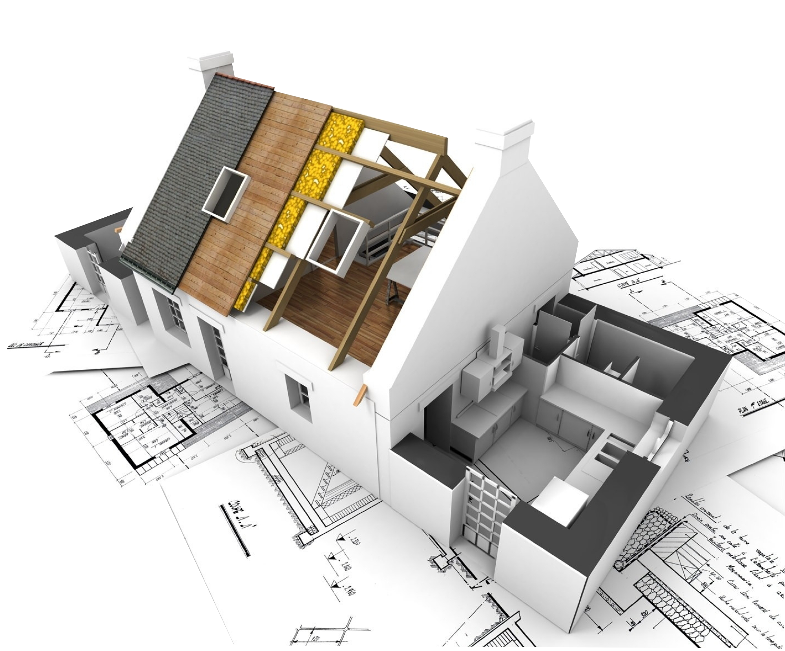

La tecnología, como ya se ha explicado, utiliza un método de trabajo que llamamos proceso tecnológico (también llamado método de proyectos), que consiste en una secuencia lógica de actividades que deben realizarse para satisfacer una necesidad o resolver un problema.
Así, podríamos definir proceso tecnológico como el conjunto de etapas o fases involucradas en el desarrollo de una solución tecnológica a un problema o necesidad. Estas fases son las siguientes:
Vamos a estudiar cada una de ellas, y para ello, vamos a analizar un proceso de forma práctica: el proceso de construcción de una vivienda.
1. NECESIDAD O PROBLEMA
1.1. Identificación del problema o necesidad y los condicionantes
Antes de comenzar un proyecto debemos plantearnos cuál es la necesidad o problema que queremos solucionar. Una vez identificada la necesidad, y para facilitar etapas posteriores, debemos profundizar en ella de manera que la delimitemos lo mejor posible.
Ejemplo (construcción de una vivienda): el arquitecto obtiene de su cliente información sobre los condicionantes: tipo de vivienda, número de pisos, número de habitaciones, baños, presupuesto aproximado y otras necesidades específicas.
1.2 Recopilación de información y análisis de antecedentes.
En la siguiente fase debemos estudiar casos similares y soluciones dadas con anterioridad a problemas parecidos, así como buscar información sobre aspectos técnicos que puedan afectar al proceso.
El buscar información y estudiar antecedentes nos permitirá elegir entre múltiples soluciones. En fases posteriores deberemos introducir las modificaciones oportunas con el fin de adaptarla a nuestras necesidades.
Ejemplo: el arquitecto busca información sobre el clima, el terreno, la orientación más favorable, tipo de viviendas, materiales de la zona, dimensiones máximas permitidas y otros datos que ayudarán a diseñar la vivienda.
2. IDEA O SOLUCIÓN
2.1. Propuesta de una o varias soluciones
Buscada toda la información, se podrán proponer varias soluciones, ayudándonos de dibujos mas o menos sencillos. Para ello, partiendo de los modelos existentes, empezaremos a dibujar variaciones que los adapten a nuestras necesidades, a explorar la posibilidad de emplear nuevos materiales, a introducir pequeñas variaciones o mezclar modelos diferentes que nos interesen.
Ejemplo: el arquitecto realizará una serie de bocetos (dibujos) que cumplan todas las condiciones identificadas en la fase anterior. Para ello empleará los medios necesarios para que los dibujos sean muy atractivos para el cliente y le transmitan el resultado final de la obra.
2.2. Puesta en común y elección de la mejor solución
En esta etapa habrá de discutir todas las posibles soluciones dadas a nuestro problema, debiéndose elegir una de ellas en función de la sencillez de ejecución, disponibilidad de materiales y herramientas, bajo coste, razones estéticas... A nivel aula taller suele pasar que nos gusten varios diseños y no sepamos por cual decidirnos. Una solución muy buena es la de mezclar varios diseños para elaborar el definitivo.
Ejemplo: el arquitecto propone al cliente varias soluciones abiertas a sugerencias, que se modifican hasta llegar a una única solución.
3. DESARROLLO DE LA IDEA O PLANIFICACIÓN
3.1. Diseño de la idea
Antes de comenzar la construcción del prototipo debemos de conocer cómo vamos a realizar cada una de las piezas que lo componen. Para ello recurrimos al dibujo técnico o plano, que debe aportar mucha información. El dibujo debe incluir información sobre las dimensiones, colores, texturas... teniendo en cuenta los materiales con que se va a trabajar.

Ejemplo: el arquitecto y su equipo elaborará los planos de la vivienda que, junto con la memoria técnica, deberán incluir toda la información (dimensiones y materiales) necesaria para llevar a cabo la construcción.
3.2. Previsión de las necesidades de material, herramientas y mano de obra, tiempos y plan de construcción
El prototipo a construir debe poseer ciertas características, por lo que lo primero será elegir los materiales que le confieran dichas propiedades, y que sean los más adecuados para la función que vayan a desempeñar. ¿Emplearías papel para construir un puente?
Los materiales elegidos determinarán, además, las herramientas que deben emplearse (no se emplean las misma herramientas para cortar papel, madera, plástico, metales, materiales pétreos, materiales cerámicos...).
Por último, habrá que seleccionar el personal que va a utilizar esas herramientas. No todo el mundo sabe emplear todas las herramientas. Un ejemplo: no contrataríamos a un carpintero para instalar el sistema eléctrico de nuestra casa.
Así, hay que tener claro que el material elegido en un proyecto condiciona las herramientas que se deben emplear, y que éstas, a su vez, condicionan la mano de obra.
Ejemplo: el arquitecto elabora la memoria técnica del edificio, donde figuren todos y cada uno de los materiales a emplear en cada una de las diferentes zonas (baños, cocina, salón, habitaciones, descansillos, portal, garaje...).
Debe intentar conocerse con anterioridad el orden y la duración del trabajo, así como la persona o personas que harán cada tarea, la forma en que lo harán y cuándo lo harán. Es algo así como elaborar un plan de tareas que se deben realizar secuenciadas, a modo de horario. En esta etapa del proceso tecnológico se definirá:
- ¿QUÉ se va a hacer?
- ¿QUIÉN lo va a hacer?
- ¿CÓMO lo va a hacer?
- ¿CUÁNDO se va a hacer?
Ejemplo. El arquitecto define el plan de obra, especificando el orden y las duraciones de los diferentes trabajos: limpieza del terreno, realización del socavón, colocación de los cimientos, colocación de la grúa, realización de la estructura, cerrado de la estructura y de la fachada, división de cada planta...¿Tiene algún sentido que el carpintero comenzase a trabajar antes de que estuviesen las paredes?
Toda esta planificación suele plasmarse en lo que se llama "hoja de procesos", una tabla en la que se plasmen todos los datos de los que hemos hablado antes:
3.3. Presupuesto
El presupuesto es un documento que recoge el precio de los materiales, herramientas, máquinas y mano de obra a utilizar, para que se pueda calcular el coste de modo aproximado y con antelación. De esta manera, podemos decidir si resulta rentable la realización del proyecto o, si por el contrario, sería mejor elegir otros materiales o modelos que abaraten el
producto final.
Ejemplo: en el caso de la vivienda, el arquitecto debe especificar los precios de todos los conceptos en la memoria técnica del edificio.
4. CONSTRUCCIÓN O FABRICACIÓN
Etapa que consiste en fabricar el objeto real o prototipo según el diseño y plan de trabajo establecido. El prototipo es el primer objeto que se construye, que servirá como modelo para hacer sobre él distinto tipos de pruebas y estudios y comprobar su idoneidad.
Si durante la construcción surge alguna necesidad de cambiar el diseño de alguna pieza, el cambio deberá reflejarse en un plano de modificación. Además, habrá que llevar al día una memoria de construcción para saber qué se ha hecho cada día, quién lo ha hecho, qué problemas se han presentado, qué soluciones se han dado, como se podría haber mejorado el
trabajo...
Durante la construcción es muy importante seguir unas normas de seguridad e higiene, así como emplear los equipos de protección individual (EPI) y colectiva, con el fin de evitar accidentes.
Ejemplo: en el caso de una casa, el arquitecto y sus ayudantes (aparejador y jefe de obra) coordinan los trabajos empleando el libro de órdenes. En éste se recogen todas las instrucciones y modificaciones que no figuran en los
planos. El jefe de obra se encargará de coordinar a los obreros y especialistas que intervienen en el proceso, tener a punto los materiales y máquinas necesarias, supervisar que los trabajos se realicen correctamente, y que se vigilen las normas de seguridad e higiene.
5. ANÁLISIS O EVALUACIÓN DEL PRODUCTO FINAL
Fase que sirve para comprobar si el objeto construido resuelve el problema o necesidad propuesto. En caso negativo hay que estudiar en qué parte del proceso se ha fallado y volver a comenzarlo en ese punto. Hay diferentes tipos de análisis que se pueden llevar a cabo:
✔ ANÁLISIS ANATÓMICO, donde se analizan:
➔ Dimensiones (altura, anchura, profundidad...).
➔ Forma (esférica, cónica, cuadrada...).
➔ Color, textura, estructura...
✔ ANÁLISIS TÉCNICO, entre otras cosas, se evalúan:
➔ Piezas que lo componen y sus ensamblajes.
➔ Materiales, herramientas y máquinas empleadas.
➔ Técnicas empleadas.
➔ Tecnologías implicadas.
➔ Cumplimiento de normativas...
✔ ANÁLISIS FUNCIONAL, donde se verificará:
➔ Funcionamiento. Si cumple los requisitos que se habían previsto.
➔ Ergonomía: si se adapta al entorno y a los usuarios.
➔ Función de las distintas partes del objeto.
➔ Mantenimiento necesario...
✔ ANÁLISIS ECONÓMICO, en el que se evaluarán, entre otros:
➔ Costes del diseño.
➔ Costes de la fabricación.
➔ Coste total.
➔ Justificante económico (si es caro o barato con respeto a otros objetos).
➔ ¿Podría fabricarse más barato?
✔ ANÁLISIS SOCIOLÓGICO, donde se hará un análisis de:
➔ El objeto y la necesidad que satisface.
➔ El objeto y su nivel de uso.
➔ El objeto y su incidencia medioambiental.
➔ El objeto y su incidencia social/cultural.
Ejemplo: al término de la construcción de la vivienda, ésta debe pasar una inspección por parte de los técnicos del Ayuntamiento, el cual concederá la cédula de habitabilidad si cumple las condiciones necesarias para ello.
6. MEMORIA DE FABRICACIÓN
La memoria de fabricación sirve para dejar constancia del proceso para poder repetirlo, así como para su divulgación.
Con toda la información recopilada a lo largo del proceso (objetivo y condicionantes del proyecto, planos, planificación, evaluación,...) se confecciona una memoria de construcción. En el caso de proyectos realizados en el aula-taller, un posible guion para este documento podría ser el siguiente:
- PORTADA (nombre del proyecto, integrantes del equipo y número del mismo, curso y grupo, año y nombre del instituto).
- ÍNDICE paginado, con los apartados y subapartados de la memoria.
1. COMPOSICIÓN DEL GRUPO.
2. OBJETIVO.
3. MATERIAL. Debe incluirse un listado de material con sus características (número de piezas, dimensiones, tipo de madera...) y su precio.
4. DISEÑO. Debe incluir:
- Bocetos a mano alzada y en perspectiva de la estructura, aportados por cada uno de los componentes del grupo (podrá usarse una plantilla isométrica).
- Dibujo delineado y acotado de todas las piezas del objeto a construir (planta alzado y perfil). Podrá usarse papel milimetrado. Si alguna pieza se repite sólo se acotará una y debajo se indicará el número de dichas piezas.
- Planos definitivos en hojas con márgenes y cajetín (perspectiva y vistas acotadas). Podrá usarse papel milimetrado. De emplearse una escala diferente a la escala natural, ésta deberá indicarse sobre los planos.
5. CONSTRUCCIÓN.
5.1. Hoja de procesos.
5.2. Fichas de utilización de herramientas.
5.3. Diario de construcción.
5.4. Presupuesto.
6. ANÁLISIS, AUTOEVALUACIÓN Y VALORACIÓN DEL PROYECTO. En este apartado se evalúa el resultado final del prototipo construido, así como al resto de componentes del grupo, empleando hojas de autoevaluación y de valoración del proyecto aportadas por el profesor.